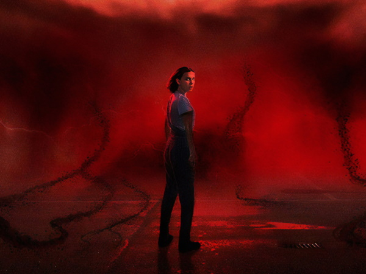
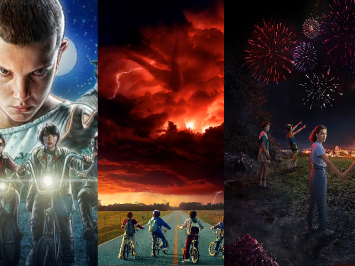

Back to Home Page
My Dream Car | My Favorite Vacation Spot | Where I was born |
My Favorite Movie Series |
My Current Location | My Favorite Video Game |
Current Fashion Trends | Citation Page |
My Favorite Show: Stranger Things

This is the main character of the show. A girl named Eleven that has
the power to control objects and people with her mind.
Stranger Things is a sci-fi tv show on Netflix. Produced by the Duffer Brothers Stranger Things saw its first realease on July 15, 2016.
There are currently 4 seasons out for Stranger Things. The shows main setting is in the town of Hawkins, Indiana around the 1980's time period.
The first season was about a little girl that has been experimented on and a group of friends find her and start to bond together. The second and third season
focus more on the plot of the story which is fighting against creatures in the underworld. In the fourth season we learn more about the major storyline of the show
and how underworld came to exist in Hawkins. A fifth season is currently being produced to finish off the Stranger Things series.
A brief description of each season:
- Stranger Things Season 1:
- A group of friends are playing Dungeons and Dragons and suddenly they meet a strange girl named Eleven with powers.
As soon as they meet Eleven they start to find themselves in trouble with alien like creatures that are destroying their town.
It's up to Eleven and her new friends to protect the town of Hawkins.
- Stranger Things Season 2:
- In Hawkins there are still demogorgons terrorizing the town. Will Byers is held in the Hawkins lab while Eleven and her friends
find a way to save Will. All while the upside down world is slowly terrorizing Hawkins.
- Stranger Things Season 3:
- It's summer in Hawkins, Indiana and school is over. Eleven and her crew develop romantic relationships and start to spread apart.
Meanwhile, Hawkins is being terrorized. Eleven and her crew are reminded that they need to save the world once again
from this cruel evil that is destroying their town.
- Stranger Things Season 4:
- After the Battle of Starcourt Eleven and her crew get seperated.
More terror is spread into the town of Hawkins.
There is a new super natural threat in Hawkins and if left unsolved the world may be left destroyed.
It is left up to Eleven and her crew to save the world once again.
Click on a section of the image view the trailers for the first 3 seasons!

My top 5 favorite characters in the show:
- Eleven
- Steve Harrington
- Jim Hopper
- Dustin Henderson
- Jonathan
The main characters in Stranger things and who they're played by:
| Character Name |
Actor Name |
| Eleven |
Millie Bobby Brown |
| Max Mayfield |
Sadie Sink |
| Will Byers |
Noah Schnapp |
| Jonathan Byers |
Charlie Heaton |
| Dustin Henderson |
Gaten Matarazzo |
| Mike Wheeler |
Finn Wolfhard |
| Lucas Sinclair |
Caleb McLaughlin |
View the whole cast of Stranger Things.
My favorite episodes of each season:
- Chapter Seven: The Bathtub (Season 1)
- Chapter Nine: The Gate (Season 2)
- Chapter Eight: The Battle of Starcourt (Season 3)
- Chapter Fiver: The Nina Project (Season 4)
Send Me an Email: liu61@uwindsor.ca
Back to top